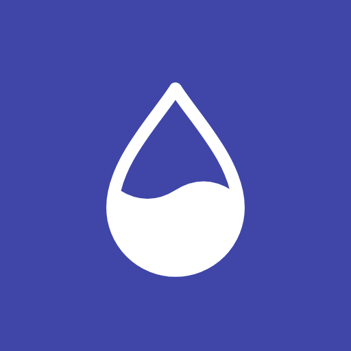

Dots run from one (little) to five (a lot). "Ages well" is my read of how dated it may look by 2029.
| Direction | Distance from today | Clear on a first visit | Ages well | Work to build | Biggest trade-off |
|---|
F as the base: it keeps every choice you've already approved and adds nothing that needs care. On top of it I'd borrow two parts: B's history charts on cards (a month, a week, a day, to scale), which make "watch the world change its mind" literal, and C's "79% chance…" sentence as the plain line a first-time visitor reads first. If you'd rather make one bold move, D ages best and is the lightest new direction to build.
Yes, it installs, and that part is already built on the branch for the current site, separate from these mockups.

The home-screen icon: the page's own gauge drop, white on neel.
public/sw.js) removes the offline part; browsers drop it on their next check.The design ideas each direction borrows, and where they come from.